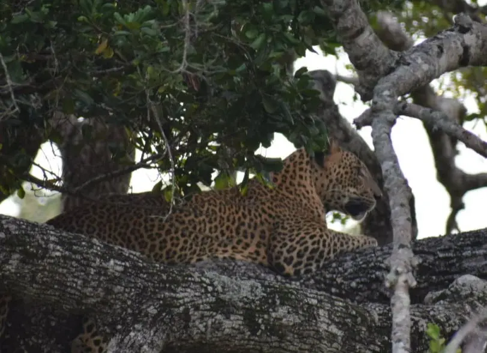
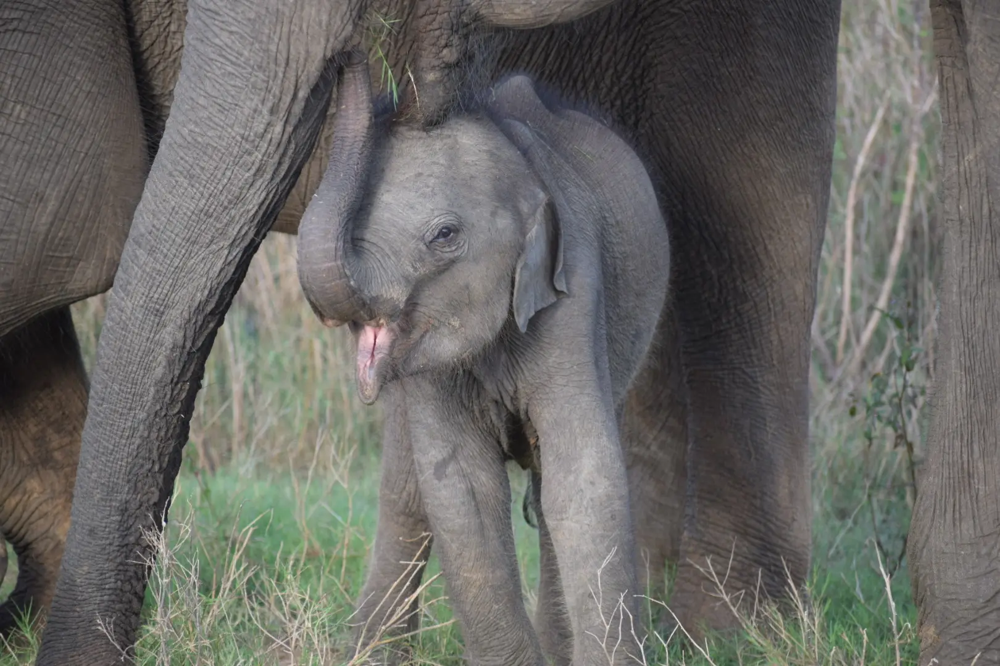
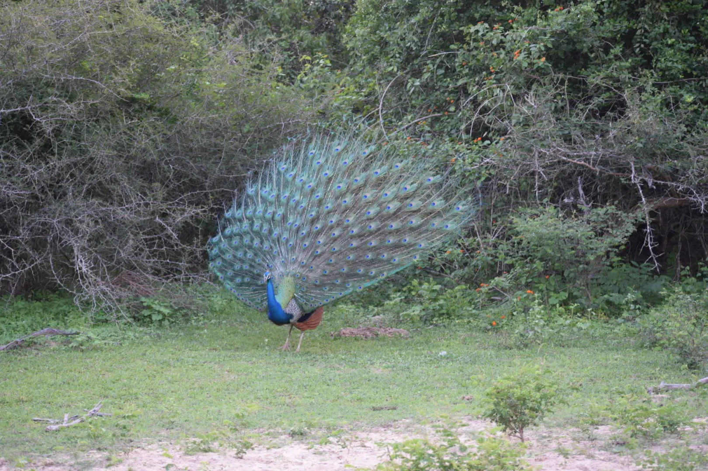
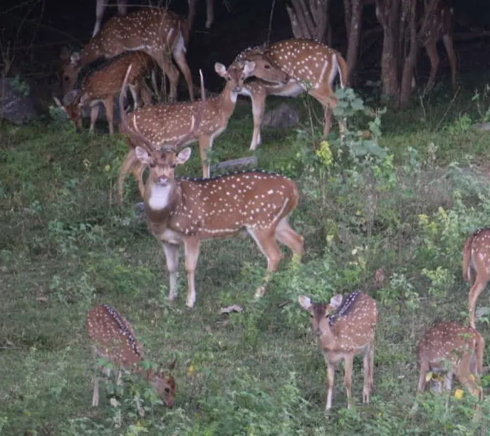
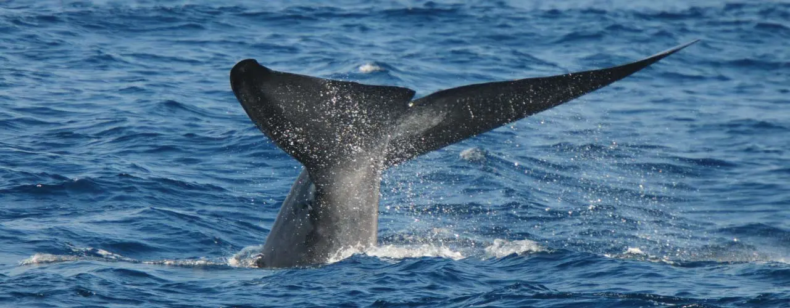

With your visit to our country,you will experience a vast biodiversity of wildlife which brings along stunning sights for the traveller to see. Sri lanka is famously known for its many habitats which contain many majestic creatures from land to even the water
| The Leopard also known as(Panthera pardus kotiya)  |
The Leopard is found in all known habitats in Sri Lanka. Its known national parks are:
|
The Sri Lankan Leopard is one of the most exciting sights |
|---|---|---|
| The Lankan Elephant also known as(Elephas maximus)  |
The Elephant is found mainly in the dry zones. They are more frequently sighted at:
|
even though in Sri lanka the leopard sigthing is one of the most amazing sights,The Elephant has always fascinated people with its physical characteristics such as having a big body and trunk.The Elephant in Sri lanka is also important as a cultural symbol as they are used in religious proccessions by Sinhala and Buddhist temples |
| The Peacock(Male) with the female Peahen  | The Peacock and Pehen can be found:
However with habitats being damaged and deforestation occuring,even driving in Hambantota in the Southern province they may be seen on the road as well |
The Peacock which is the national bird of India and is a common sight to see in many national parks and even on the streets of the Western and Southern province as well.It has well coloured feathers which open up when it dances.It is one of the beautiful sights to see in this small island. |
| Sri Lankan axis deer  | They are mostly found in:
|
Sri Lankan axis deer also known as spotted Deer is one of the 4 species of Deer in most parts of the country except the highlands.They travel in herds and are prey to the leopards in the jungles. |
| The Blue Whale  | They are found by:
|
Blue Whales are a sight to see as they are the biggest mammals in the world and can grow upto 29.9m. All local boat trips will not interrupt the path of the whale and the viewer can spot the whale from a safe distance |
Sri Lanka also has a vast amount of birds and fauna which contributes to the vast biodiversity of wildlife on this island